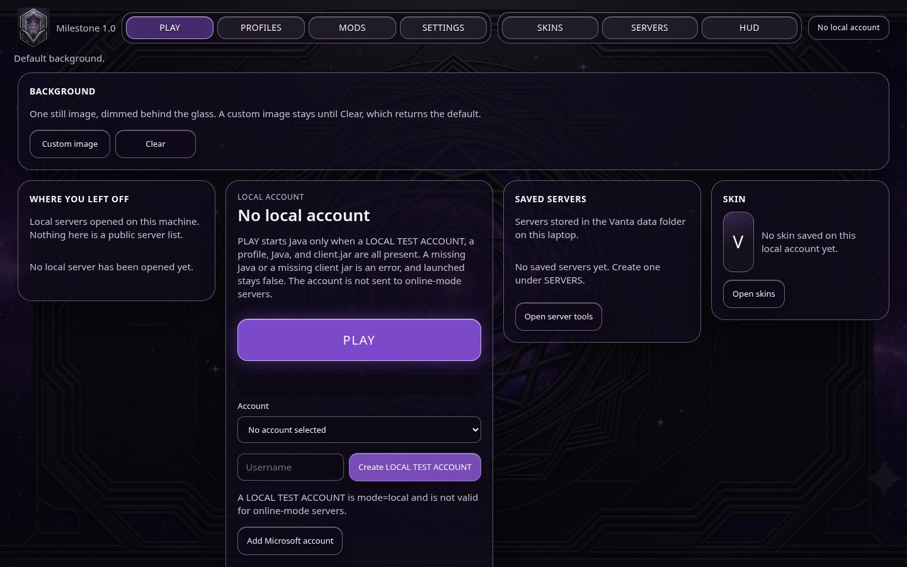

Fabric 1.21.11
One supported version: Minecraft 1.21.11 with the Fabric loader.
Minecraft Java · Fabric 1.21.11
Vanta is a free, open-source launcher that sets up Fabric 1.21.11 with performance mods, a trailer-style look and friend-friendly multiplayer tools. You can also make local servers.

One supported version: Minecraft 1.21.11 with the Fabric loader.
Pick a username and play. No Microsoft sign-in is required. Local accounts work on offline-mode, LAN and friend servers, but not on online-mode servers like Hypixel.
Sodium, Lithium, ImmediatelyFast, FerriteCore, Entity Culling and Dynamic FPS are downloaded from Modrinth for you.
An in-game Mods screen with config buttons, using Cloth Config and YACL.
Built-in skin library, with a skin saved per local account.
Create a Paper (or Fabric) server in a few clicks. Vanta downloads the official server jar and checks its hash, then lets you start, stop and use the console.
Turn on a playit.gg tunnel for a server so friends can join without port forwarding.
Open to LAN gives you a public join address. With Online Mode off, friends on local accounts can join too.
Iris with Complementary Reimagined (default) and Unbound shaders, plus the Bare Bones, Fresh Animations and compat resource packs, EMF/ETF, Not Enough Animations and Visuality.
Gamma Utils night-vision mode stays bright even with shaders on, unlike gamma-based fullbright.
Controller detection, plus a controller label for each profile in the launcher.
A double-click Windows app with Python built in, and a macOS app for Apple Silicon and Intel (not yet tested on a real Mac).
The visual set and night-vision fullbright arrived after Windows v1.0.1 was built, so they are in the latest source and the macOS first-run download. They will be in the next Windows build.
Vanta-Windows-App.zip · 529 MB (555,134,783 bytes)
SmartScreen: the exe isn't code-signed. If you see "Windows protected your PC", click More info → Run anyway. Extract the zip first; don't run it from inside the zip.
Download for WindowsVanta-macOS.zip · 39 MB (41,346,155 bytes)
Gatekeeper: the app is unsigned. The first time, right-click Vanta.app → Open → Open. This build has not been tested on a real Mac yet.
Download for macOSAll releases and source: github.com/addu864/vanta/releases
Release notes from GitHub Releases. A saved copy is shown if GitHub can't be reached.
That's SmartScreen. Vanta isn't code-signed yet. Click More info → Run anyway. Some antivirus tools may also flag unsigned launchers.
Install Java 21 or newer, for example Eclipse Temurin. On Windows, tick "Add to PATH" in the installer, then restart Vanta. On macOS, Vanta also finds Java in /Library/Java/JavaVirtualMachines.
Fullbright uses Gamma Utils' night-vision mode, so it works with shaders. Toggle it with B where Vanta has set that key, otherwise with Gamma Utils' default H. Change the key in Options → Controls → Key Binds → "Gamma Utils – Night Vision". The Left/Right arrow keys change the strength.
Press K (Iris' toggle key). To switch between Complementary Reimagined and Unbound, go to Options → Video Settings → Shader Packs.
In your world, press Esc → Open to LAN. Set Online Mode: OFF so friends on local accounts can join, then start the LAN world. e4all shows a public address in chat. Send it to your friends; they add it under Multiplayer → Direct Connection.
"Use" is set to Toggle. Go to Options → Controls → Use: Hold. In options.txt that's toggleUse:false. Sneak and Sprint have the same Toggle/Hold setting.
Options → Resource Packs. Move packs between Available and Selected; the top pack wins. The visual set goes: compat patch on top, then Fresh Animations, then Bare Bones.
No. Local accounts only work on offline-mode, LAN and friend servers. Online-mode servers need a paid Microsoft account.
Open an issue on GitHub. Describe what happened, and attach client.log or launcher-ui.log from Vanta's data folder if you can. Never post account files or passwords.